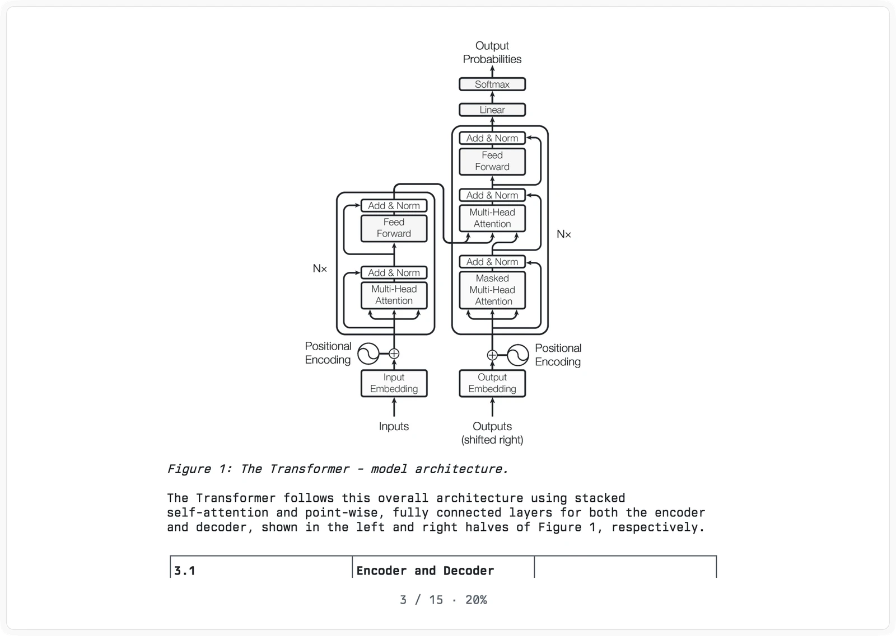
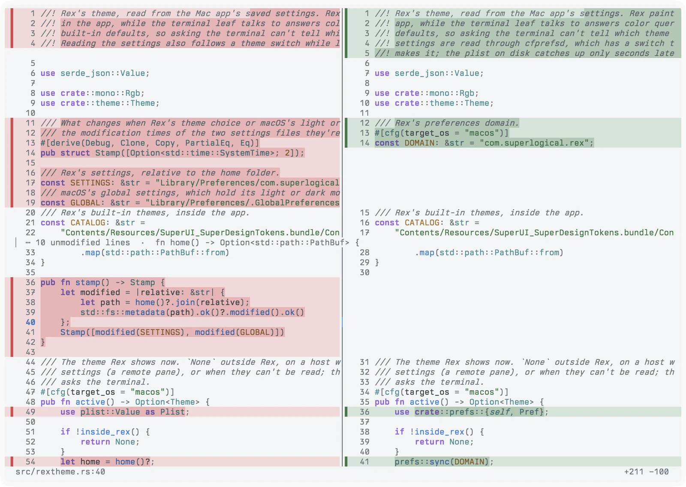
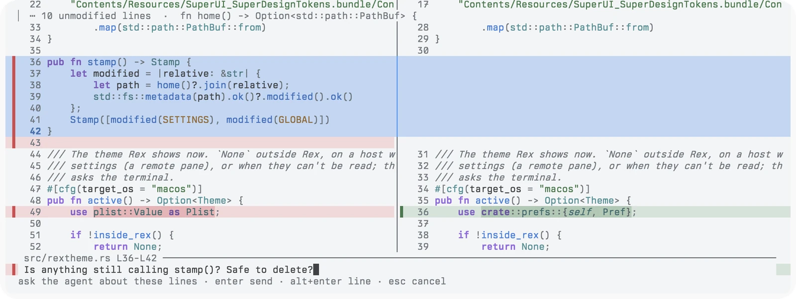
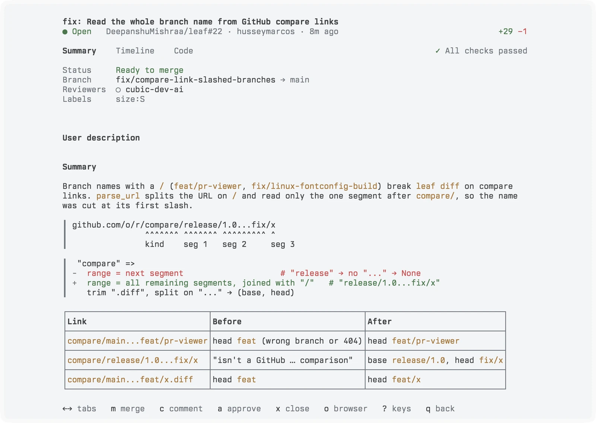
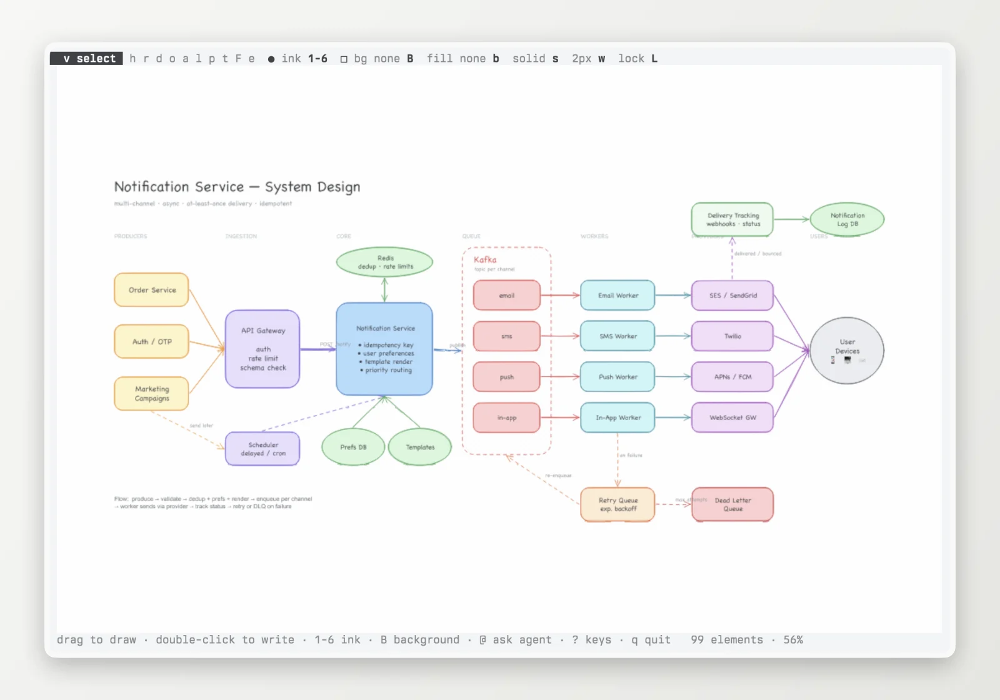
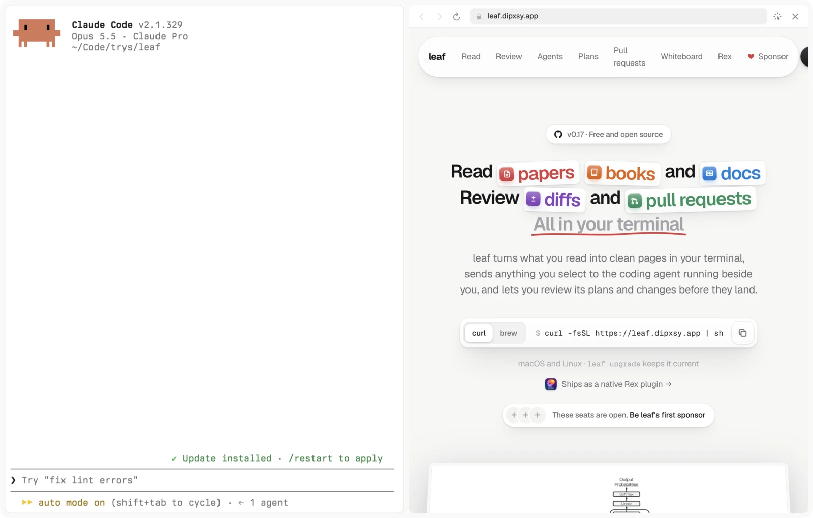
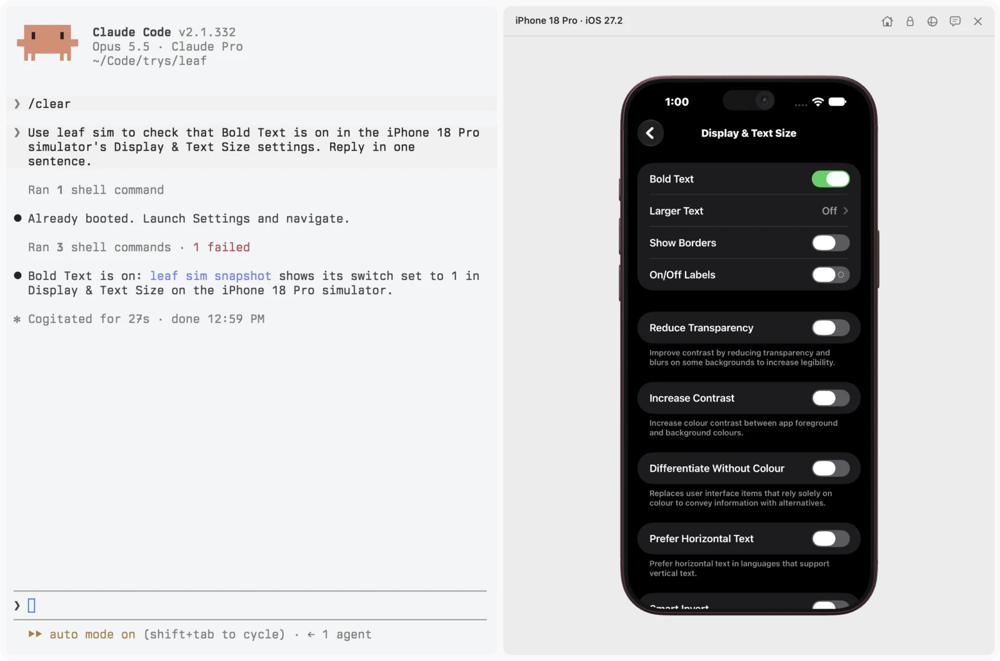

leaf turns what you read into clean pages in your terminal, sends anything you select to the coding agent running beside you, and lets you review its plans and changes before they land.
curl -fsSL https://leaf.dipxsy.app | sh
macOS and Linux · leaf upgrade keeps it current

"Attention Is All You Need", opened from its arXiv link. The figure is a real image in the terminal.
Figures and tables stay where the author put them. Every document reopens where you stopped.
PDFs and arXiv links, with headings and figures in place.
leaf open paper.pdfEPUBs laid out into pages, with bookmarks.
leaf open book.epubMarkdown with tables, alerts, colored code and diagrams.
leaf open README.mdArticles without the menus, banners and sidebar.
leaf open https://…PNG, JPEG, WebP, SVG, and HEIC on macOS, turned upright.
leaf photo.heicYour working tree, a branch, any range or a patch.
leaf diffEverything on GitHub that concerns you, open or done.
leaf prOld code on the left, new code on the right, the changed words marked. Comment on any lines and send it to your agent or to GitHub.
leaf diff --branch

Select some lines and press @. Your question goes to Claude Code, Codex or opencode with the file, line numbers and the code around it.

Comment on any line, cut or rewrite a block, then approve or send it back. The verdict arrives as your agent's next message, and a revised plan shows what changed.
Claude Code, Codex, Cursor, Pi, Antigravity and Grok Build hand you their plans first.
leaf agent setupFile by file from an overview: note lines or whole files, mark them viewed, send one review.
leaf reviewTeach every agent here to open, review and ask with leaf.
leaf agent setupSee checks, the description, the timeline and every comment, read the code, then approve, reply or merge. tab shows what's merged and closed. No browser tab needed.
leaf pr

A hand-drawn whiteboard you share with your agent. Draw boxes and arrows, press @ to ask, and watch its edits land as it writes them. Boards are plain Excalidraw files, so they open on excalidraw.com too.
leaf board

A WebKit browser in the Rex pane beside you. Press the pointer, click any element, and React Grab sends its HTML, the React component and source file behind it, and your question to your agent.
leaf browser localhost:3000

An iOS Simulator on a 3D iPhone in the Rex pane beside you. Tap, drag and type on it yourself, or let your agent drive it with leaf sim. Mark part of the screen and press shift+cmd+a to ask about it.
leaf sim install

Pick an installed iPhone from Rex's palette. Drag beside it to turn it, pinch to zoom.
leaf sim openThe screen's elements from iOS accessibility, one short line each. No screenshots.
leaf sim snapshot -iTap, fill, scroll, type and launch apps by ref, such as @e3.
leaf sim tap @e3macOS 13 or later with Xcode. leaf agent setup teaches your agent the rest.
leaf ships as a native Rex plugin. Every action shows up in the command palette, documents and diffs open in the pane beside you, and questions go to the agent already running in your session.
leaf rex install
Six colors. A rough circle comes out clean.
Hundreds of voices, from half speed to 4×.
A phrase still matches when it breaks across lines.
Syntax colors, and mermaid blocks drawn as diagrams.
Every document reopens at your page or line.
One file on your machine. No account, no sync.
A sponsor membership includes a seat in the leaf Discord with the @sponsor role. In that server you see previews of the next leaf release, and of other work, before they are public, and you can send feature requests. Your name goes on this page. leaf stays free.
Sponsor leafOne-time. You choose the amount.
Every fix, feature and idea from these people made it better.
curl -fsSL https://leaf.dipxsy.app | sh
Or with Rust: cargo install leaf-reader